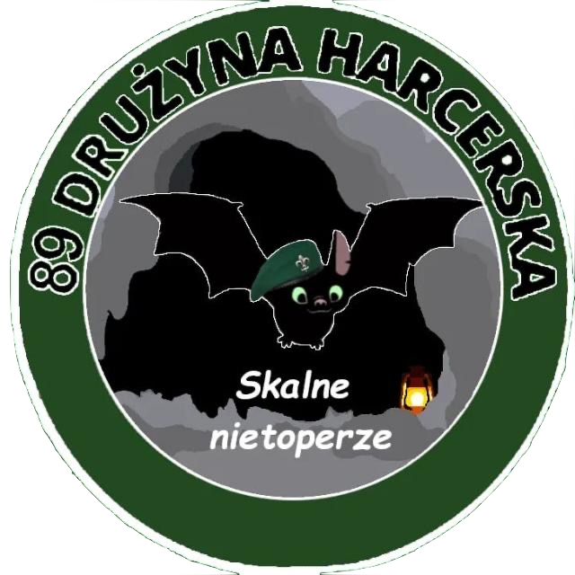

Powstanie naszej drużyny
Nasza drużyna harcerska powstała w sierpniu 2022 roku. Druhna drużynowa - Druhna Iza po paru latach mieszkania w naszej gminie zdecydowała się założyć taką drużynę.
Pierwsze zbiórki były pewnie najcięższe, nikt się nawzajem nie znał i żaden z przyszłych harcerzy nie wiedział nic o tym zainteresowaniu. Stopniowo na każdej zbiórce dowiadywali się coraz więcej, po pierwsze druhna rozdzieliła nas pomiędzy zastępy: damskie i męskie. Są to takie grupy, w których pracują harcerze. W każdym zastępie druhna wyłoniła zastępowych i podzastępowych - czyli "przywódców" zastępów.
Wkrótce wszyscy zaczęli poznawać o co w harcerstwie chodzi, zaczęli wyjeżdżać na rajdy i obozy, poznawać nowych znajomych, bawić się, a jednocześnie rozwijać się poprzez wykonywaniu zadań na sprawności. Teraz nasza drużyna liczy już ponad 100 osób, są w niej harcerze, zuchy oraz harcerze starsi.
Co robimy?
Jako harcerze bierzemy udział wielu